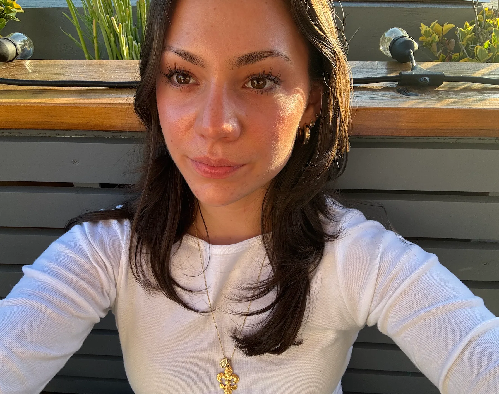

Pi Beta Phi Sorority
Leadership Development & Community Service affiliation.
Hi, I'm
Tulane University student with a background in marketing, public relations, interior design, and media production.

I'm a motivated Tulane University student with a background in marketing, public relations, interior design, and media production. I've proven my ability to excel in fast-paced, collaborative environments through sharp organizational skills, detail-oriented research, and clear client communication.
B.S. in Psychology, Tulane University — Expected May 2027
Minors in Strategy, Leadership, and Analytics (SLAM) & Design
GPA: 3.8
CIEE — Fashion & Business, Paris, France
London School of Economics — Marketing, London, UK
Mill Valley, CA
Internships and roles across marketing, design, and community work.
Freuds Group · New York, NY
Ken Fulk Inc. · Los Angeles, CA
Heidi Toll Design · Los Angeles, CA
Pickney Foundation · New Orleans, LA
Freuds Group · London, UK
The Edit · Mill Valley, CA
Media Monitoring, Media Outreach, Pitch Briefs, Market Research, Trend Analysis
Concept Development, Material Sourcing, Video Production & Editing, Visual Presentations
Project Management, Client Communications, Event Support, Problem-Solving
A few things I've worked on outside the classroom.
Leadership Development & Community Service affiliation.
Filmed, edited, and produced short documentaries on social and local topics, including cultural hair braiding, surf therapy, local small businesses, and roller derby.
Participated in international service trips focused on constructing essential community infrastructure.